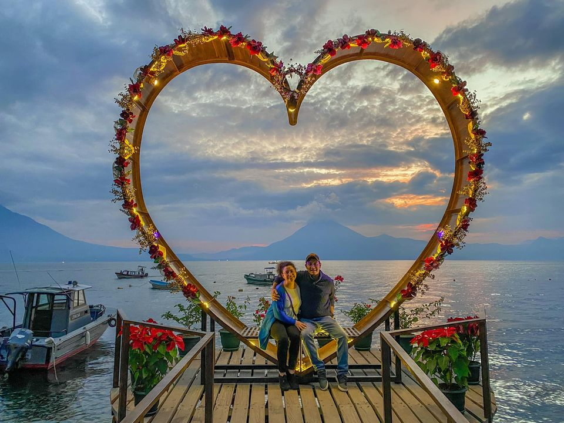

Panajachel
Short Summary
This is the farthest location you can go to. You can go there in
one day but to go back in the same day will be difficult. It's a 5 hour
drive going there and that not counting traffic. It's amazing and super
touristict. One of the places they always recommend for you to go to
when coming to Guatemala.
How expensive is it? 💲💲💲 - 💲💲💲💲💲
Pros.
- A lot, and I mean a lot of things you can buy that are Tipica.
- There is mountain close by that you can hike and its super big.
- Before getting there, there is a location called Tecpán that is
really delicious for breakfast.
Cons
- Super far and its more like a 2 day trip.
- To get to the main area you want to go to you have to go in a boat.
- Once again, you need to be with someone who is Guatemalan
they also charge you more if you are a tourist.
